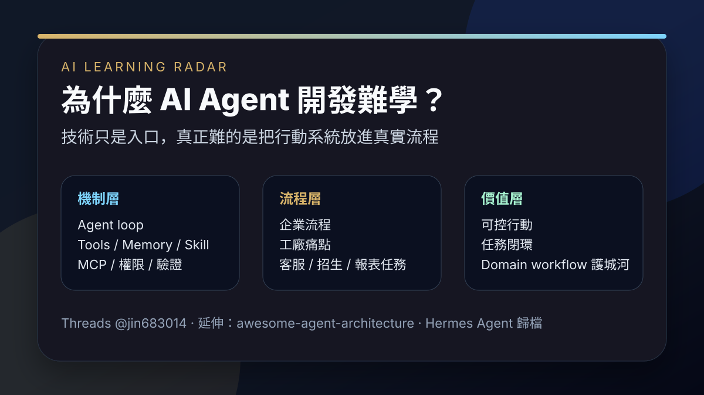

Threads｜Jin Xiong：為什麼 AI Agent 開發很難學？技術只是入口，真正難的是情境與流程

一句話摘要
AI Agent 開發的學習難點不在「會不會串幾個工具」，而在於能否把 agent loop、工具、記憶、技能、MCP、權限與檢查機制，落到真實企業流程、工廠現場與可驗證的任務閉環。
來源脈絡
- Threads 作者：Jin Xiong（@jin683014）。
- 原貼主題：`Ai Agent开发为什么非常难学？`，標籤包含 `#ai`、`#ai应用开发`、`#懂王ai`、`#大模型开发`。
- 可見互動：約 3.1 萬次瀏覽；Threads DOM 顯示 488 讚、7 回覆、64 轉發／350 互動數字（平台顯示欄位可能隨時間變動）。
- 影片封面可見白板標題「AI Agent 到底学什么？」與字幕「Agent 的技术学起来很简单」。
這則貼文值得保存的原因
這則貼文切中 AI Agent 教學常見誤區：很多課程把焦點放在模型 API、prompt、工具呼叫或框架語法，但真正做得出來的 agent 往往需要理解「任務所在的現場」。
也就是說，AI Agent 不是只把 LLM 接上工具，而是要能回答：
- 這個任務在企業／課程／工廠／客服流程中的哪個環節？
- 哪些步驟能自動化，哪些步驟需要人工確認？
- 工具呼叫後如何驗證真的完成，而不是只讓模型口頭宣稱完成？
- 記憶、技能、MCP、資料庫與瀏覽器工具要如何被限制在安全邊界內？
- 如果 agent 做錯，如何回滾、補救、通知人類？
這些問題比「寫一個 demo agent」更難，也更接近實際價值。
留言補充：企業流程知識會變值錢
留言中有人指出：「懂企業流程運作的工程師或顧問會更加值錢，懂工廠運行邏輯跟痛點的更值錢了。」這句很適合作為 AI 學習雷達的判斷準則：
- AI Agent 工程師若只懂模型，容易停留在玩具 demo。
- 顧問若懂流程痛點，又能把流程拆成 agent 可執行的工具與檢查點，價值會上升。
- 工廠、客服、行政、財務、招生、教學等領域的 domain workflow，可能成為 agent 應用的關鍵護城河。
系統化學習入口：awesome-agent-architecture
留言中也有人補充 GitHub 專案：`hardness1020/awesome-agent-architecture`。
我用 GitHub API 驗證後，這個 repo 的描述是「Learn AI agents from scratch」，截至歸檔時約 747 stars、MIT License、主要語言為 Python。README 將 agent 的核心放在 harness engineering：模型負責推理，但 harness 讓推理變成可控行動，包含工具執行、狀態保存、權限控管與循環協調。
README 也把學習路徑拆成多個層次，例如：
- agent loop：模型呼叫、工具呼叫、觀察結果再回到模型。
- tool runtime：工具註冊、schema、dispatch 與執行結果。
- memory：跨輪次與跨任務保存狀態。
- permissions / side-effect gates：有副作用的動作必須被限制與確認。
- tasks / context / interfaces：把任務拆解、傳遞上下文，讓 agent 能持續工作。
這剛好補上 Threads 貼文提到的「難學」：難點不是名詞，而是把這些機制按層次理解，再放進真實任務裡驗證。
對學習與教學設計的啟發
如果要教 AI Agent，建議不要只從框架或模型 API 開始，而是採用「機制 × 場景」雙軸：
- 先用最小 agent loop 建立直覺：模型 → 工具 → 觀察 → 再決策。
- 再加入真實工具：檔案、瀏覽器、資料庫、日曆、LINE、Google Workspace。
- 每加入一個工具，就同步加入權限、驗證與錯誤恢復。
- 最後把任務放入具體工作流程，例如招生名單整理、課程資料歸檔、客服回覆、工廠巡檢、報表產生。
這樣學員比較不會誤以為 agent 是「更會聊天的 chatbot」，而會理解它是「受控的任務執行系統」。
保存判斷
這則適合歸檔在「AI Agent / 自動化」與「教育與課程」交界：它提醒我們，AI Agent 的核心競爭力會從單純模型能力，轉向流程建模、工具治理、驗證閉環與 domain knowledge。對欒帥的 AI 教學、課程設計、企業導入與 Hermes Agent 實作，都有長期參考價值。
原始連結
Threads：
https://www.threads.com/@jin683014/post/Dcie037kiKh
分享連結：
https://www.threads.com/share/BAPUkr3WeV/
GitHub：